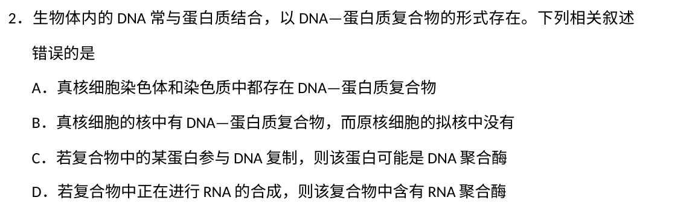
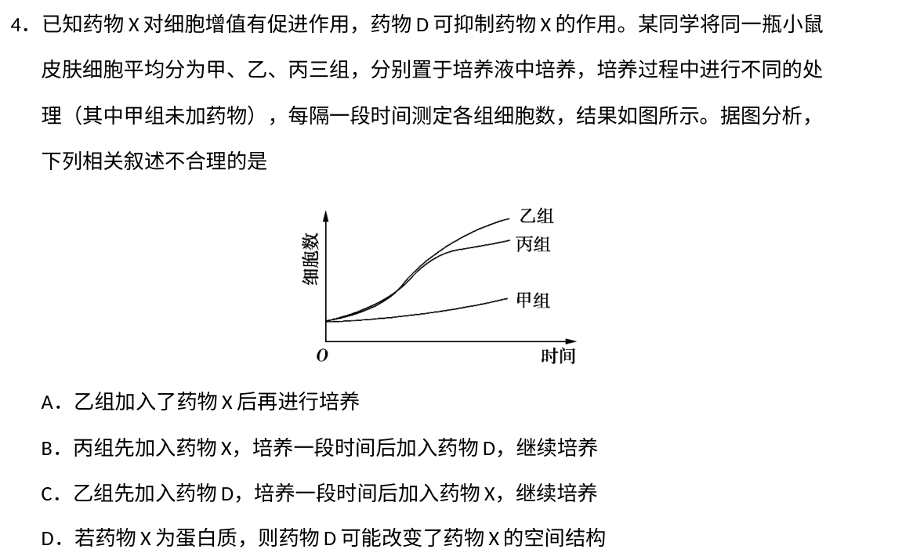
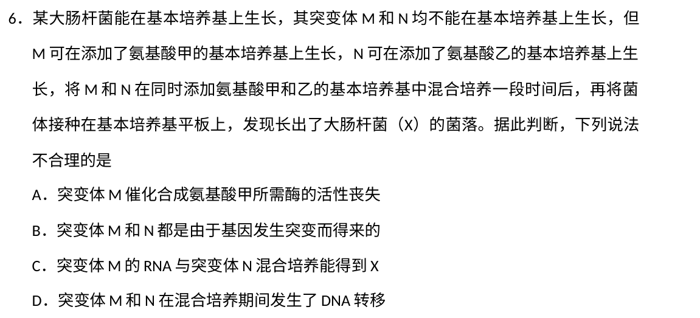
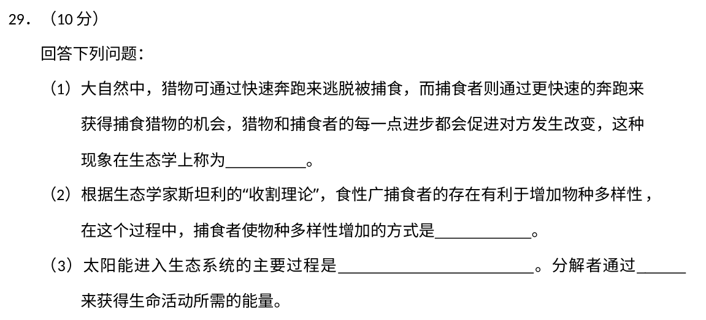
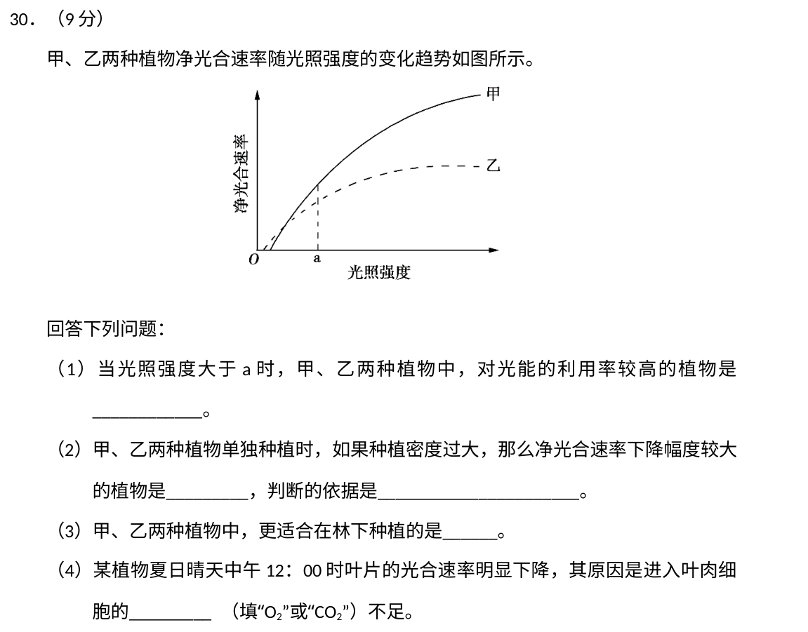
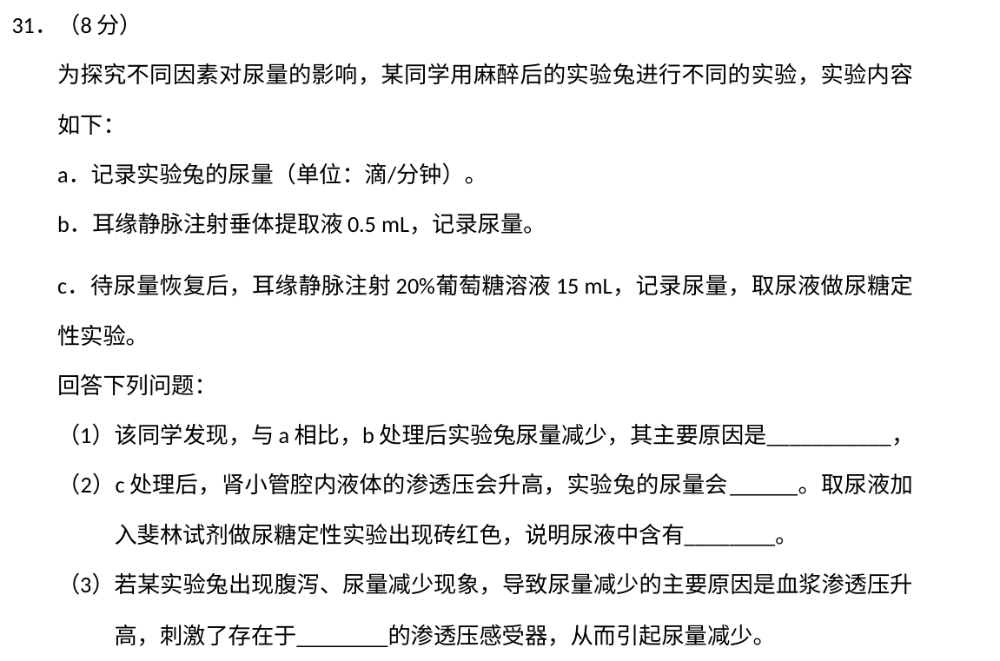
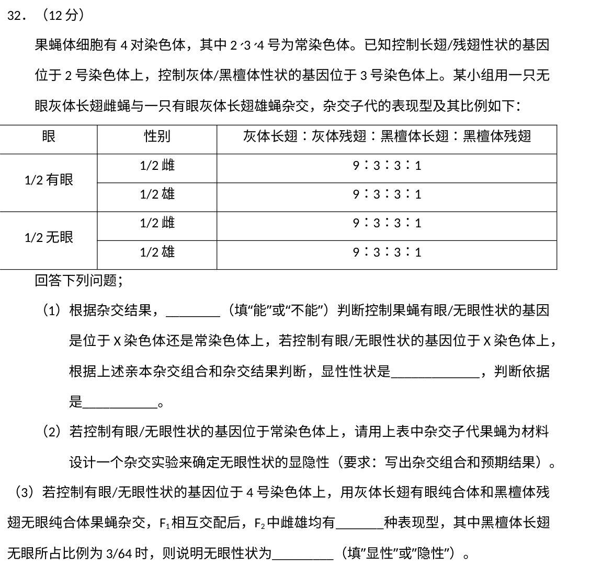
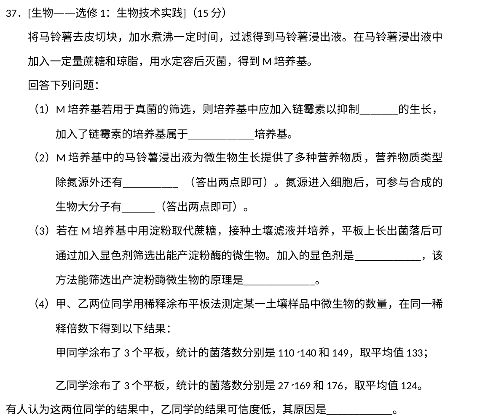
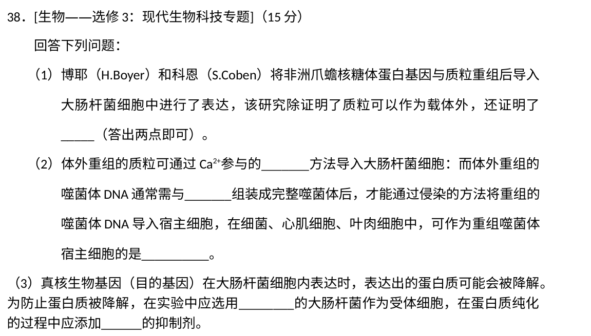

答卷前，考生务必将自己的姓名、准考证号填写在答题卡上。
回答选择题时，选出每小题答案后，用铅笔把答题卡上对应题目的答案标号涂黑，如需改动，用橡皮擦干净后，再选涂其它答案标号。回答非选择题时，将答案写在答题卡上，写在本试卷上无效。
考试结束后，将本试卷和答题卡一并交回。
原卷第一部分选择题共13小题，每小题6分，共78分；每小题只有一项符合题目要求。本册收录其中生物第1—6题。
原卷第22—32题为必考题，每个试题考生都必须作答；本册收录其中生物第29—32题。
原卷选考题说明：请考生从2道物理题、2道化学题、2道生物题中每科任选一题作答。如果多做，则每学科按所做的第一题计分。生物第37、38题各15分，本册两题均收录供复习。
相关题目：第 1 题 · 第 2 题 · 第 3 题 · 第 4 题 · 第 5 题 · 第 6 题 · 第 29 题 · 第 30 题 · 第 31 题 · 第 32 题 · 第 37 题 · 第 38 题
返回原卷作答说明
题目与已知条件
生物膜的结构与功能存在密切的联系。下列有关叙述错误的是
A. 叶绿体的类囊体膜上存在催化ATP合成的酶
B. 溶酶体膜破裂后释放出的酶会造成细胞结构的破坏
C. 细胞的核膜是双层膜结构，核孔是物质进出细胞核的通道
D. 线粒体DNA位于线粒体外膜上，编码参与呼吸作用的酶
查看原题图／原始配图
原始配图 1 · 第1题原题图版
所用高中知识
膜上蛋白赋予生物膜特定功能，线粒体DNA主要位于基质中。类囊体膜进行光反应，核孔调控核质交流，溶酶体含水解酶。
读题与思路
类囊体膜催化光合磷酸化；溶酶体水解酶外泄会破坏细胞；核孔为核质交换通道。这三项成立。线粒体DNA主要位于基质，不能写在线粒体外膜，故D错误。
分步解析
- 类囊体膜含ATP合成酶，可将光反应建立的能量转换为ATP，A正确。
- 溶酶体水解酶被释放可破坏细胞结构，B正确。
- 核膜两层膜，核孔供某些大分子受控进出，C正确。
- 线粒体DNA不位于外膜，而主要在基质，因此D错误。
检查与易错点
核孔是选择性通道，并非所有物质自由通过；线粒体DNA编码部分而非全部呼吸相关蛋白。
本题来源：paper · doc-supplied · web-current-pdf
返回原卷作答说明
题目与已知条件
生物体内的DNA常与蛋白质结合，以DNA—蛋白质复合物的形式存在。下列相关叙述错误的是
A. 真核细胞染色体和染色质中都存在DNA—蛋白质复合物
B. 真核细胞的核中有DNA—蛋白质复合物，而原核细胞的拟核中没有
C. 若复合物中的某蛋白参与DNA复制，则该蛋白可能是DNA聚合酶
D. 若复合物中正在进行RNA的合成，则该复合物中含有RNA聚合酶
查看原题图／原始配图

原始配图 1 · 第2题原题图版所用高中知识
DNA与蛋白质结合不只指染色质包装。复制、转录中的酶结合DNA也可形成复合物，原核细胞同样有这些过程。
读题与思路
原核无真核型染色质，不等于拟核DNA不结合蛋白；复制、转录都须与相应聚合酶结合，B错。真核染色质/染色体均有DNA和蛋白，复制可结合DNA聚合酶、转录可结合RNA聚合酶，A、C、D成立。
分步解析
- 真核染色体与染色质是同种物质不同形态，均含DNA和蛋白质，A正确。
- 原核拟核DNA在复制、转录时可结合DNA聚合酶、RNA聚合酶等，B的“没有”错误。
- 参与复制的蛋白可能是DNA聚合酶，C正确；正在转录的复合体含RNA聚合酶，D正确。
检查与易错点
原核不具典型核膜或真核染色质，不能推出没有与核酸结合的酶和结构蛋白。
本题来源：paper · doc-supplied · web-current-pdf
返回原卷作答说明
题目与已知条件
下列有关植物根系吸收利用营养元素的叙述，错误的是
A.在酸性土壤中，小麦可吸收利用土壤中的N2和NO-3
B. 农田适时松土有利于农作物根细胞对矿质元素的吸收
C. 土壤微生物降解植物秸秆产生的无机离子可被根系吸收
D. 给玉米施肥过多时，会因根系水分外流引起“烧苗”现象
查看原题图／原始配图
原始配图 1 · 第3题原题图版
所用高中知识
植物根主要吸收可利用的无机离子，如硝酸根和铵离子；小麦自身不能直接固定N₂。主动运输依赖代谢供能。
读题与思路
小麦不具直接固定N₂为氮营养的能力，酸性环境不改变这一点，A错。松土供氧利于根主动吸收、分解者释放无机盐、肥多引起根失水，分别支持B、C、D。
分步解析
- A：小麦可吸收NO₃⁻，但不能直接吸收利用N₂作为氮营养，酸性土壤也不赋予固氮能力，错误。
- 松土提高氧气供应，促进根呼吸和矿质主动吸收，B正确。
- 秸秆经微生物分解可释放无机离子供根利用，C正确。
- 施肥过量使土壤溶液渗透压升高，根细胞失水导致烧苗，D正确。
检查与易错点
豆科与根瘤菌共生固氮也由微生物完成，不能把一般植物根直接利用氮气当普遍规律。
本题来源：paper · doc-supplied · web-current-pdf
返回原卷作答说明
题目与已知条件
已知药物X对细胞增殖有促进作用，药物D可抑制药物X的作用。某同学将同一瓶小鼠皮肤细胞平均分为甲、乙、丙三组，分别置于培养液中培养，培养过程中进行不同的处理（其中甲组未加药物），每隔一段时间测定各组细胞数，结果如图所示。据图分析，下列相关叙述不合理的是
A. 乙组加入了药物X后再进行培养
B. 丙组先加入药物X，培养一段时间后加入药物D，继续培养
C. 乙组先加入药物D，培养一段时间后加入药物X，继续培养
D. 若药物X为蛋白质，则药物D可能改变了药物X的空间结构
题面所用转录版将“增殖”写作“增值”；此处指细胞数目增加，解析使用生物学术语“细胞增殖”。
查看原题图／原始配图

原始配图 1 · 第4题原题图版所用高中知识
增长曲线斜率反映净增殖快慢。X促进细胞增殖，D抑制X效应，先后添加会在曲线不同阶段留下变化。
读题与思路
乙从培养早期即比甲增长快且保持优势，符合先加X；丙先同乙后受抑制，符合后加D。先给D再给X不能解释乙的早期促进，C不合理；改变蛋白X构象可以是D抑制作用的一种机制。
分步解析
- 乙持续受X促进，细胞数高于甲，A解释合理。
- 丙先与乙类似，后增长放缓，符合先加X后加D，B合理。
- C若乙先加抑制剂D，再加X，难解释其从早期起即明显持续高于对照的曲线，故不合理。
- 若X为蛋白，D改变其空间结构可降低活性，D作为可能机制成立。
检查与易错点
这里依据净细胞数推测处理，不能把曲线最终平台说成所有细胞已停止代谢；药物具体分子机制仍需实验。
本题来源：paper · doc-supplied · web-current-pdf
返回原卷作答说明
题目与已知条件
种群密度是种群的数量特征之一，下列叙述错误的是
A. 种群的S型增长是受资源因素限制而呈现的结果
B. 某林场中繁殖力极强老鼠种群数量的增长会受密度制约
C. 鱼塘中某种鱼的养殖密度不同时，单位水体该鱼的产量有可能相同
D.培养瓶中细菌种群数量达到K值前，密度对其增长的制约逐渐减弱
查看原题图／原始配图
原始配图 1 · 第5题原题图版
所用高中知识
资源有限、竞争和疾病等常随密度增加而增强，形成S形增长。密度与单位水体产量并非简单一一正比。
读题与思路
资源限制和密度制约形成S形增长，繁殖强也不能免除；不同养殖密度下个体质量/存活率补偿可使产量相同。近K时密度制约增强而不是减弱，所以D错。
分步解析
- A：资源限制使增长逐渐偏离J形并趋于K，正确。
- B：即便老鼠繁殖力强，也受食物、空间等密度因素限制，正确。
- C：不同密度可能通过个体生长、生存率补偿得到相同总产量，可能成立。
- D：临近K时资源竞争增强、增长越来越受限，不是密度制约逐渐减弱，错误。
检查与易错点
K是特定环境条件下的维持水平，不是永远固定；增长速率达到最大时通常尚未到K。
本题来源：paper · doc-supplied · web-current-pdf
返回原卷作答说明
题目与已知条件
某大肠杆菌能在基本培养基上生长，其突变体M和N均不能在基本培养基上生长，但M可在添加了氨基酸甲的基本培养基上生长，N可在添加了氨基酸乙的基本培养基上生长，将M和N在同时添加氨基酸甲和乙的基本培养基中混合培养一段时间后，再将菌体接种在基本培养基平板上，发现长出了大肠杆菌（X）的菌落。据此判断，下列说法不合理的是
A. 突变体M催化合成氨基酸甲所需酶的活性丧失
B. 突变体M和N都是由于基因发生突变而得来的
C. 突变体M的RNA与突变体N混合培养能得到X
D. 突变体M和N在混合培养期间发生了DNA转移
查看原题图／原始配图

原始配图 1 · 第6题原题图版所用高中知识
氨基酸合成路径依赖酶，相关基因突变可形成营养缺陷。细菌遗传物质为DNA，获得功能基因可恢复合成能力。
读题与思路
M补甲、N补乙才生长，分别提示相关合成能力缺失。混合培养发生DNA转移和重组可出现基本培养基上独立生长的X；单给M的RNA不提供这类稳定遗传恢复机制，C不合理。
分步解析
- M补甲才生长，符合甲合成酶功能丧失；N相应缺乙合成能力，A、B合理。
- M/N在有甲乙培养基可同时存活，若发生DNA转移与重组，可恢复所缺功能，形成能在基本培养基独立生长的X，D合理。
- M的RNA不能作为该细菌稳定遗传转化的通常载体，仅与N混合不支持获得稳定恢复型X，因此C不合理。
检查与易错点
在补全营养培养基上能生长不等于缺陷已遗传修复；本题关键是转接基本培养基仍形成菌落。
本题来源：paper · doc-supplied · web-current-pdf
返回原卷作答说明
题目与已知条件
（10分）回答下列问题：
（1）大自然中，猎物可通过快速奔跑来逃脱被捕食，而捕食者则通过更快速的奔跑来获得捕食猎物的机会，猎物和捕食者的每一点进步都会促进对方发生改变，这种现象在生态学上称为________。
（2）根据生态学家斯坦利的“收割理论”，食性广捕食者的存在有利于增加物种多样性，在这个过程中，捕食者使物种多样性增加的方式是________。
（3）太阳能进入生态系统的主要过程是________。分解者通过________来获得生命活动所需的能量。
查看原题图／原始配图

原始配图 1 · 第29题原题图版所用高中知识
协同进化是相互作用物种及环境在相互影响中演化。广食性捕食者可抑制优势竞争者垄断资源，维持多样性。能量主要经生产者光合进入。
读题与思路
捕食者与猎物相互施加选择压力，是共同进化。广食性捕食者限制数量占优者，减轻竞争排斥，给其他物种生存机会；太阳能主要由光合作用输入，分解者分解有机物并经呼吸获能。
分步解析
- 快跑猎物给捕食者选择压力，快捕食者又给猎物选择压力，双方相互促进适应，称协同/共同进化。
- 广食性捕食者往往更多取食数量占优者，限制其排斥其他物种，给较弱竞争者保留资源与生存机会，从而提高多样性。
- 绿色植物通过光合作用将太阳能转为有机物中的化学能，构成主要输入。
- 分解者分解遗体、残骸和排遗物中的有机物，经呼吸释放能量支持自身生命活动。
答案
（1）协同进化/共同进化。（2）较多捕食优势或数量多的物种，削弱其竞争优势，为其他种提供生存空间。（3）生产者光合作用固定太阳能；分解有机物并通过呼吸获得能量。
检查与易错点
捕食者维持多样性是题给收割理论的情境，并非任何捕食强度都必然提高多样性；能量不循环。
本题来源：paper · doc-supplied · web-current-pdf
返回原卷作答说明
题目与已知条件
（9分）甲、乙两种植物净光合速率随光照强度的变化趋势如图所示。
回答下列问题：
（1）当光照强度大于a时，甲、乙两种植物中，对光能的利用率较高的植物是________。
（2）甲、乙两种植物单独种植时，如果种植密度过大，那么净光合速率下降幅度较大的植物是________，判断的依据是________。
（3）甲、乙两种植物中，更适合在林下种植的是______。
（4）某植物夏日晴天中午12：00时叶片的光合速率明显下降,其原因是进入叶肉细胞的________（填“O2”或“CO2”）不足。
查看原题图／原始配图

原始配图 1 · 第30题原题图版所用高中知识
净光合是总光合减呼吸。阳生植物常有较高光饱和点及最大净光合，阴生植物适应弱光。过密种植降低叶片实际受光。
读题与思路
a以上甲净光合更高，且光强降低时甲下降幅度更大，故两空均甲；乙的弱光利用与较低饱和点更适于林下。中午气孔部分关闭限制进入叶肉细胞的CO₂。
分步解析
- 当光强大于a，甲曲线高于乙，同光照获得较多净同化，按题意甲光能利用较高。
- 密植使遮阴加强、受光下降。图中甲对光强变化的净光合降幅较大，因此甲受影响较大。
- 乙在较低光强即接近饱和、弱光适应性较好，更适合林下。
- 中午高温强蒸腾导致气孔部分关闭，CO₂进入不足，暗反应受限出现午休。
答案
（1）甲。（2）甲；遮阴降低光强时甲净光合下降幅度较大。（3）乙。（4）CO₂。
检查与易错点
不要把“净光合更高”一概外推到全部光强；必须遵守题设“大于a”的范围。
本题来源：paper · doc-supplied · web-current-pdf
返回原卷作答说明
题目与已知条件
（8分）为探究不同因素对尿量的影响，某同学用麻醉后的实验兔进行不同的实验，实验内容如下：
a．记录实验兔的尿量（单位：滴/分钟）。
b．耳缘静脉注射垂体提取液0.5 mL，记录尿量。
c．待尿量恢复后，耳缘静脉注射20%葡萄糖溶液15mL，记录尿量，取尿液做尿糖定性实验。
回答下列问题：
（1）该同学发现，与a相比，b处理后实验兔尿量减少，其主要原因是________，
（2）c处理后，肾小管腔内液体的渗透压会升高，实验兔的尿量会______。取尿液加入斐林试剂做尿糖定性实验出现砖红色，说明尿液中含有________。
（3）若某实验兔出现腹泻、尿量减少现象，导致尿量减少的主要原因是血浆渗透压升高，刺激了存在于________的渗透压感受器，从而引起尿量减少。
查看原题图／原始配图

原始配图 1 · 第31题原题图版所用高中知识
抗利尿激素由下丘脑合成，经垂体后叶释放，促进肾小管和集合管重吸收水。小管液高渗可减少水重吸收。
读题与思路
垂体提取液中的抗利尿激素促进重吸收水，故尿少；大量注糖超过肾重吸收能力，小管液渗透压升高而尿增，出现还原糖反应结合注射物判断葡萄糖。腹泻引起的渗透压升高由下丘脑感受器感知。
分步解析
- 垂体提取液可含抗利尿激素，使肾小管、集合管重吸收水增强，尿量减少。
- 大量葡萄糖注射后滤过糖超过重吸收能力，小管液渗透压升高，保留较多水，尿量增加；结合所加物质与斐林砖红色，说明尿中有葡萄糖。
- 腹泻丢水使血浆渗透压升高，刺激下丘脑渗透压感受器，促进抗利尿激素释放，减小尿量以保水。
答案
（1）提取液中抗利尿激素促进肾小管和集合管重吸收水。（2）增加；葡萄糖。（3）下丘脑。
检查与易错点
垂体释放抗利尿激素不等于垂体合成。斐林试剂检测还原糖并非专一葡萄糖，结论还结合本实验所注射的糖。
本题来源：paper · doc-supplied · web-current-pdf
返回原卷作答说明
题目与已知条件
（12分）果蝇体细胞有4对染色体，其中2、3、4号为常染色体。已知控制长翅/残翅性状的基因位于2号染色体上，控制灰体/黑檀体性状的基因位于3号染色体上。某小组用一只无眼灰体长翅雌蝇与一只有眼灰体长翅雄蝇杂交，杂交子代的表现型及其比例如下：
| 眼 | 性别 | 灰体长翅∶灰体残翅∶黑檀体长翅∶黑檀体残翅 |
| 1/2有眼 | 1/2雌 | 9∶3∶3∶1 |
| 1/2雄 | 9∶3∶3∶1 |
| 1/2无眼 | 1/2雌 | 9∶3∶3∶1 |
| 1/2雄 | 9∶3∶3∶1 |
回答下列问题；
（1）根据杂交结果，________（填“能”或“不能”）判断控制果蝇有眼/无眼性状的基因是位于X染色体还是常染色体上，若控制有眼/无眼性状的基因位于X染色体上，根据上述亲本杂交组合和杂交结果判断，显性性状是________，判断依据是________。
（2）若控制有眼/无眼性状的基因位于常染色体上，请用上表中杂交子代果蝇为材料设计一个杂交实验来确定无眼性状的显隐性（要求：写出杂交组合和预期结果）。________________________
（3）若控制有眼/无眼性状的基因位于4号染色体上，用灰体长翅有眼纯合体和黑檀体残翅无眼纯合体果蝇杂交，F1相互交配后，F2中雌雄均有_______种表现型，其中黑檀体长翅无眼所占比例为3/64时，则说明无眼性状为________（填”显性”或”隐性”）。
查看原题图／原始配图

原始配图 1 · 第32题原题图版所用高中知识
翅型和体色分别在2、3号染色体上，自由组合可得9∶3∶3∶1。眼表型1∶1且两性均出现，既可由常染色体测交，也可由某X连锁组合得到。
读题与思路
眼基因常染色体测交与X上显性无眼杂合雌×有眼雄均可产生表中比例，不能定位；若X上无眼隐性则雌雄表型分离不合表。将F₁无眼雌雄交配，3:1与全无眼可区分显隐。三对独立基因F₂每性别有8型；(3/64)/(1/4×3/4)=1/4，故无眼隐性。
分步解析
- 不能仅凭表判断眼基因在X还是常染色体。若在X且无眼显性，XᴬXᵃ无眼雌×XᵃY有眼雄，可得到雌雄各自有眼∶无眼=1∶1。若无眼隐性，则XᵃXᵃ雌×XᴬY雄使女儿全有眼、儿子全无眼，与原表不符，故X假设下无眼必须显性。
- 若在常染色体，用F₁无眼雌雄交配。无眼显性模型下原交配为Aa×aa，F₁无眼均Aa，自交型交配给3无眼∶1有眼；无眼隐性模型下无眼均aa，子代全无眼。
- 若眼在4号，与另两对基因独立，F₁三杂合互交，F₂每个性别均有2³=8种表型。
- 黑檀体概率1/4，长翅3/4，两者合计3/16；题给黑檀长翅无眼3/64，故无眼概率(3/64)/(3/16)=1/4，是隐性。
答案
（1）不能；无眼；只有无眼显性且母本杂合才能使两个性别均出现有眼、无眼分离。（2）F₁无眼雌×无眼雄；3∶1则无眼显性，全无眼则隐性。（3）8；隐性。
检查与易错点
原题表格原样保留。末问“雌雄均有8种”不是把性别也乘进去写16；求总体黑檀长翅无眼比例也无需再乘1/2。
本题来源：paper · doc-supplied · web-current-pdf
返回原卷作答说明
题目与已知条件
（15分）[生物——选修1：生物技术实践]
将马铃薯去皮切块，加水煮沸一定时间，过滤得到马铃薯浸出液。在马铃薯浸出液中加入一定量蔗糖和琼脂，用水定容后灭菌，得到M培养基。
回答下列问题：
（1）M培养基若用于真菌的筛选，则培养基中应加入链霉素以抑制_______的生长，加入了链霉素的培养基属于________培养基。
（2）M培养基中的马铃薯浸出液为微生物生长提供了多种营养物质，营养物质类型除氮源外还有________（答出两点即可）。氮源进入细胞后，可参与合成的生物大分子有______（答出两点即可）。
（3）若在M培养基中用淀粉取代蔗糖，接种土壤滤液并培养，平板上长出菌落后可通过加入显色剂筛选出能产淀粉酶的微生物。加入的显色剂是________，该方法能筛选出产淀粉酶微生物的原理是________。
（4）甲、乙两位同学用稀释涂布平板法测定某一土壤样品中微生物的数量，在同一稀释倍数下得到以下结果：
甲同学涂布了3个平板，统计的菌落数分别是110、140和149，取平均值133；
乙同学涂布了3个平板，统计的菌落数分别是27、169和176，取平均值124。
有人认为这两位同学的结果中，乙同学的结果可信度低，其原因是________。
查看原题图／原始配图

原始配图 1 · 第37题原题图版所用高中知识
抗生素可对不同微生物产生选择作用。淀粉遇碘显蓝，局部水解会出现不显蓝区域。重复性是评估计数可信度的重要标准。
读题与思路
链霉素排除细菌、保留真菌，属选择培养；浸出液供碳及无机盐，氮用于蛋白质/核酸。淀粉水解圈遇碘不蓝。乙的27、169、176离散显著且27偏低，平均不能抹平操作异常。
分步解析
- 链霉素抑制细菌，利于真菌筛选，加入后属于选择培养基。
- 马铃薯浸出液可提供碳源、无机盐等；氮是蛋白质和核酸组成元素，氮源可用于合成两类大分子。
- 加入碘液，未分解淀粉区显蓝；产淀粉酶菌落周围淀粉被水解，形成透明/不显蓝圈，据此筛选。
- 甲三平板110、140、149较接近；乙27与169、176相差悬殊，重复性差，且27低于常用可计数范围30—300，直接取平均掩盖异常，可信度较低。
答案
（1）细菌；选择。（2）碳源、无机盐；蛋白质、核酸。（3）碘液；产淀粉酶菌落周围淀粉被分解，遇碘不变蓝而形成圈。（4）乙平行结果差异过大、重复性差，需排查操作并重做。
检查与易错点
不能只凭平均值124或133相近就说可信度相同；不要无理由直接删去27这个异常值后宣称实验准确。
本题来源：paper · doc-supplied · web-current-pdf
返回原卷作答说明
题目与已知条件
（15分）[生物——选修3:现代生物科技专题]
回答下列问题：
（1）博耶( H. Boyer)和科恩(S.Coben)将非洲爪蟾核糖体蛋白基因与质粒重组后导入大肠杆菌细胞中进行了表达，该研究除证明了质粒可以作为载体外，还证明了_____(答出两点即可)。
（2）体外重组的质粒可通过Ca2+参与的_______方法导入大肠杆菌细胞：而体外重组的噬菌体DNA通常需与_______组装成完整噬菌体后，才能通过侵染的方法将重组的噬菌体DNA导入宿主细胞，在细菌、心肌细胞、叶肉细胞中,可作为重组噬菌体宿主细胞的是________。
（3）真核生物基因(目的基因)在大肠杆菌细胞内表达时,表达出的蛋白质可能会被降解。为防止蛋白质被降解，在实验中应选用________的大肠杆菌作为受体细胞,在蛋白质纯化的过程中应添加______的抑制剂。
查看原题图／原始配图

原始配图 1 · 第38题原题图版所用高中知识
重组质粒可经感受态细胞转化进入细菌；噬菌体须装配外壳才能感染细菌。目标蛋白可能遭宿主蛋白酶降解。
读题与思路
真核基因能进入并在细菌表达，说明跨物种表达可能且密码基本通用。Ca²⁺法为转化；噬菌体DNA须装入蛋白外壳，宿主为细菌。选择蛋白酶缺陷株并于纯化加蛋白酶抑制剂，可减少目标蛋白降解。
分步解析
- 非洲爪蟾基因在大肠杆菌成功表达，可分别从两层解释：真核来源的基因在适宜条件下能由原核表达系统读取表达；原核细胞按其密码子合成相应蛋白，也支持不同生物遗传密码的通用性。重组DNA能进入受体细胞、不同生物间可进行基因交流亦可作为相关结论。
- Ca²⁺处理促进大肠杆菌进入感受态，重组质粒导入称转化。重组噬菌体DNA需与外壳蛋白装配再感染，宿主选细菌。
- 用蛋白酶缺陷型大肠杆菌降低胞内降解；纯化时加蛋白酶抑制剂，避免细胞破碎释放的蛋白酶继续降解目标蛋白。
答案
（1）真核生物的基因可在原核细胞中表达；不同生物的遗传密码具有通用性（也可说明重组DNA能进入受体细胞、不同生物间可进行基因交流）。（2）转化；外壳蛋白；细菌。（3）蛋白酶缺陷型；蛋白酶。
检查与易错点
“可表达”不等于所有真核基因原样导入都能正确表达，含内含子、调控序列和翻译后加工等仍可能构成障碍。
本题来源：paper · doc-supplied · web-current-pdf
题源与核验说明
- 2018年高考真题——理科综合（全国卷Ⅰ） Word版含解析【KS5U 高考】.doc所附参考资料；SHA-256：e6b187dad9347a5af105d61a2c97932bced2cb3677e27736bedfd54e58963157
- web-paper.pdf原卷文件；SHA-256：8b015b53d1a4ce63d4555d4bad2fbc80cc6025b014bd7b1e80ff363a6a004d1c
- 中国教育在线：2018全国Ⅰ卷理综原题及答案Word以锦宏教育公开完整全国Ⅰ卷PDF核对第1–2、14–16、19–20页生物题文。所附Word把生物非选择题重排为7–12，本册保留全国卷号29–32、37、38。
- 锦宏教育：2018全国Ⅰ卷完整理综题面PDF20页PDF用于核对生物全部题号、选项、表格及小问；PDF有少数转录字误，未盲目用其覆写清晰题面。
- 北京新东方：2018全国Ⅰ卷生物试题及逐题解析独立复核时联网确认卷别及题文；第4题写作细胞增殖，可用于解释所附转录版的增值异文。只用作题源对照，解答按题意独立推导。